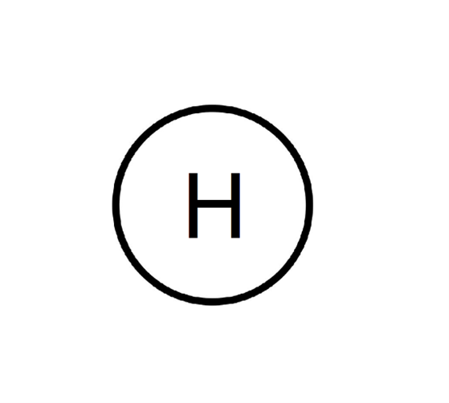
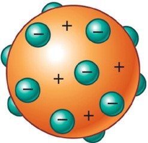
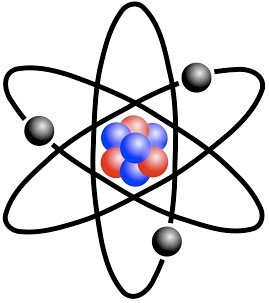
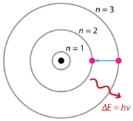

Modelos atômicos
O que é modelo atômico?
O termo “modelo atômico” se refere a representações teóricas ou conceituais que descrevem
as características dos átomos, sendo elas a sua estrutura e comportamento. Esses modelos são
formados para auxiliar a cientistas a compreender e explicar a organização dos átomos e suas interações.
Quais são os modelos atômicos?
- Modelo filosófico: Os filósofos Leucipo e Demócrito titularam o átomo como a menor partícula
da matéria, sendo indivisível e indestrutível. Sendo esse o primeiro modelo atômico proposto pela humanidade. - Modelo Atômico de Dalton (início do século XIX): O modelo atômico proposto por Dalton, falava que os átomos são
esferas sólidas e indivisíveis, e que cada um possuía massa e propriedades específicas.
 - Modelo Atômico de Thomson (final do século XIX): J.J Thompson propôs que o átomo é uma esfera sólida e divisível que
é carregada positivamente, possuindo cargas negativas conhecidas como elétrons grudadas em sua superfície
 - Modelo de Rutherford (Início do século XX): Rutherford propôs que o átomo é composto por um núcleo muito pequeno e
sólido, formado por prótons e nêutrons, e a eletrosfera (local onde os átomos giram em volta do núcleo em movimentos aleatórios)
 - Modelo atômico de Bohr (Início do século XX): Niels Bohr refinou a ideia proposta por Rutherford. Ele presumiu que os elétrons se
movimentavam em torno do núcleo em trajetória circular na chamada camada de energia, sendo que cada nível possuí
um valor específico de energia, sendo assim, explicando a razão da liberação de energia em ondas eletromagnéticas.
